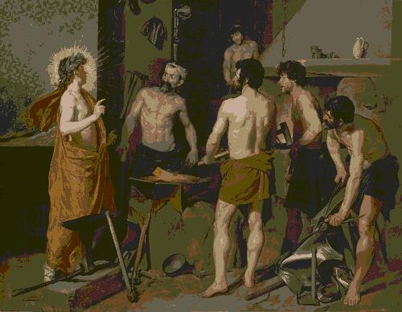
How painters dealt with forges, mills, trains and engines, from Velázquez to The Matrix: painting, then photography and film. Work in progress. Images are low-res, color-reduced, from Wikimedia Commons.
Disclaimer: list, images and texts compiled with an AI model
(Claude Opus 5.5, claude-opus-5-5), mostly from memory
and Wikipedia. Dates, sizes, collections and anecdotes not all
checked. Fields marked (?) are uncertain.

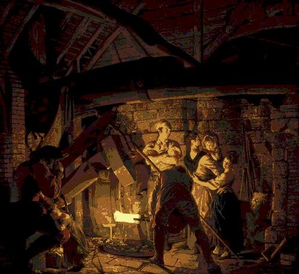
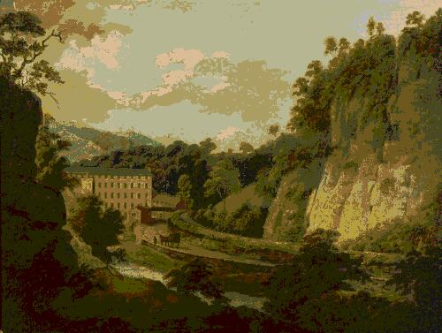
Cromford at night. Every window is lit: the mill runs in shifts, day and night. One of the first paintings of a factory.
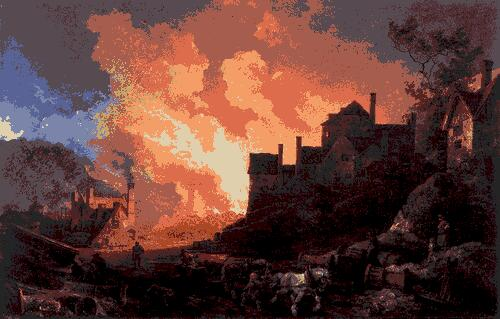
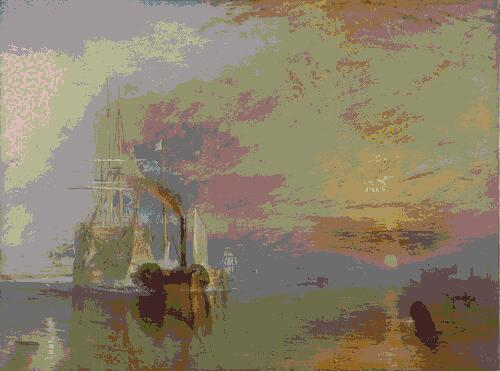
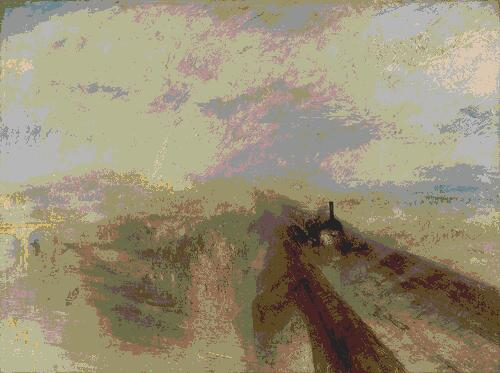
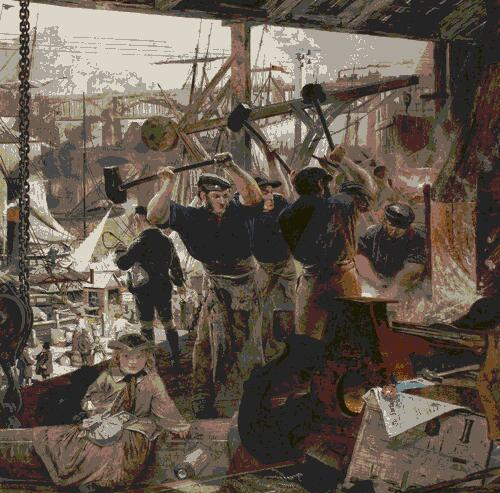
Full title: In the Nineteenth Century the Northumbrians show the World what can be done with Iron and Coal. Three strikers, an Armstrong gun, Stephenson's bridge behind. Heroic, a bit stiff.
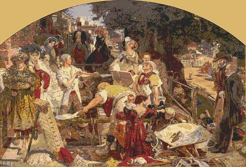
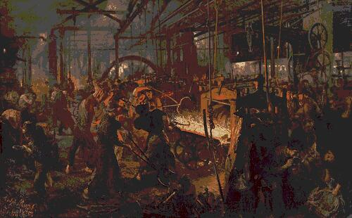
A rolling mill in Königshütte, Silesia. Menzel went there and made dozens of sketches. Workers pull a glowing ingot; on the right a shift eats lunch, washes. Near-documentary.
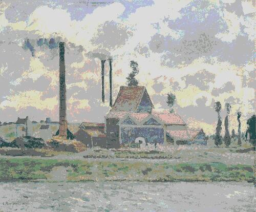
A sugar factory on the Oise. Chimney and smoke sit calmly in the landscape, no drama. The factory is just part of the countryside now.
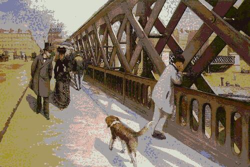
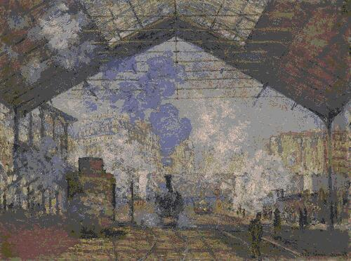
One of twelve canvases. Monet got permission to have the trains stopped and their boilers stoked for him. Steam under a glass-and-iron roof: the station as a cathedral of vapour.
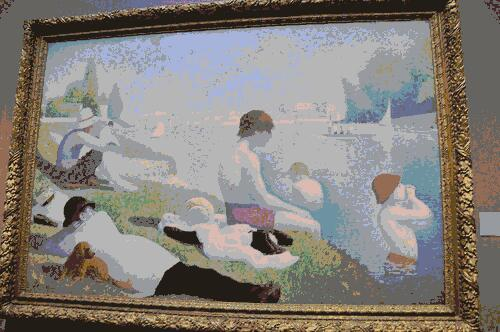
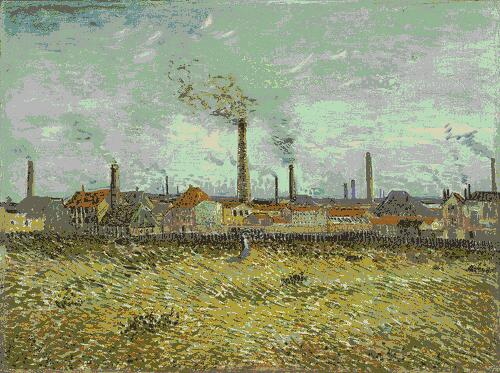
Paris period. Red brick, chimneys, a big sky. Painted like a wheat field.
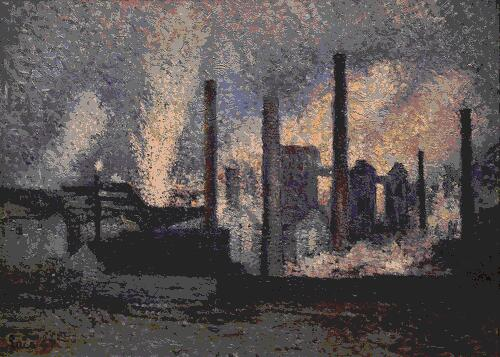
Pointillism applied to the Pays Noir. Luce was an anarchist and spent time in the Belgian mining region. Smoke turns to coloured dots: pretty and dirty at once.
museum photo, slight glare
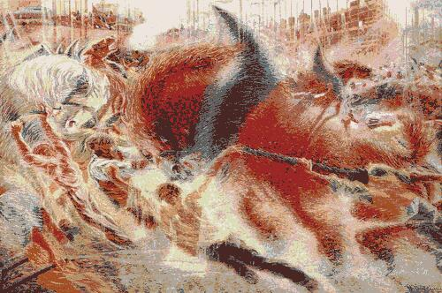
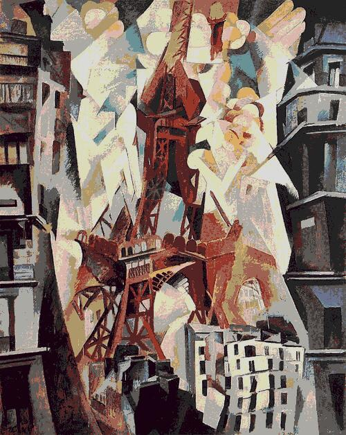
One of a long series (1909–12, then again in the 1920s). The tower shatters, the buildings around it bend away. Engineering as a subject in its own right.
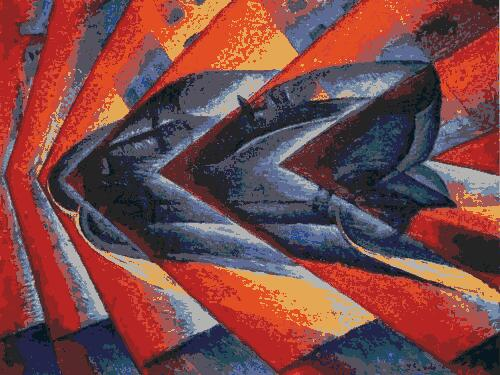
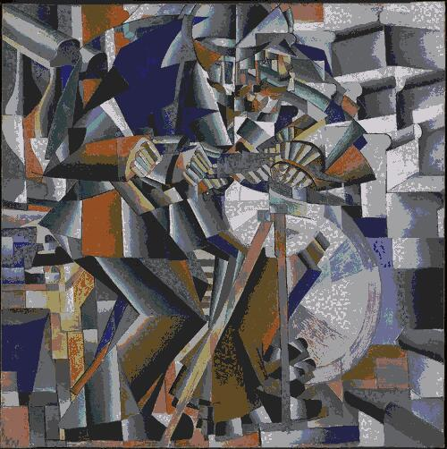
Cubo-futurist. A man at a grinding wheel: hands, foot and stairs repeat like frames of a film. The body becomes part of the mechanism.
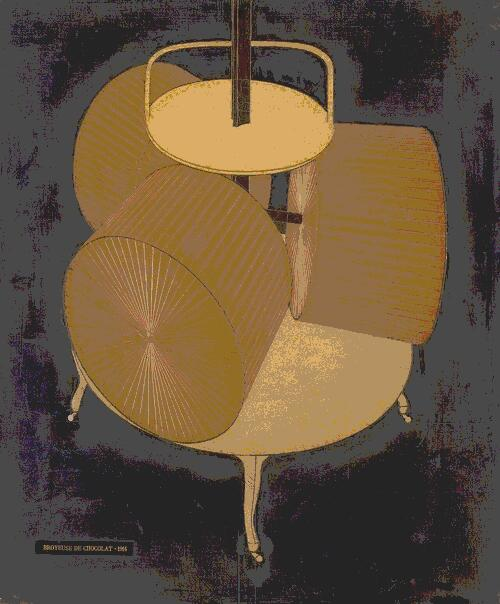
A machine Duchamp saw in a Rouen confectioner's shop window. Three drums on a Louis XV table, painted flat like a technical drawing. The threads are sewn on. It ended up in the Grand Verre as the bachelor's machine, a "celibate" mechanism.
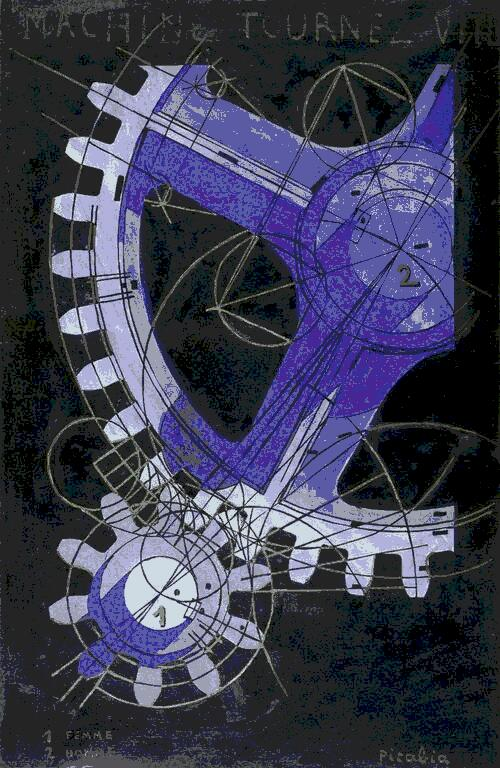
Two gears, numbered 1 and 2; the legend says 1 = woman, 2 = man. Mechanomorphic period: the machine as a joke, and as sex.
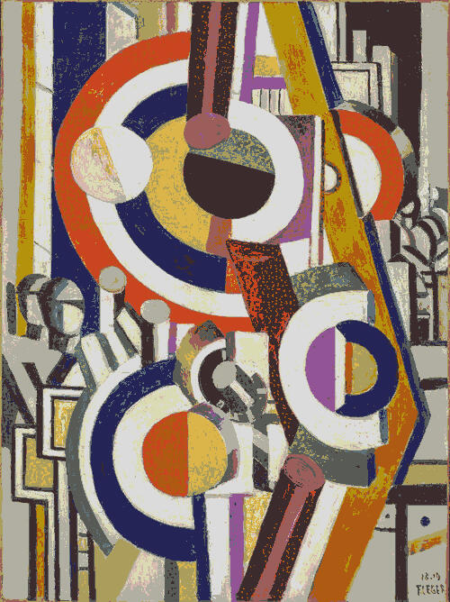
Back from the trenches, where Léger was fascinated by the breech of a 75 mm gun. Disks, tubes, flat bright colours. Not a machine, but painting built the way a machine is.
Moustache, tattoo, cigarette, a ring on his finger. Arms like polished pistons. The worker as a calm, solid machine, posing like a classical portrait.
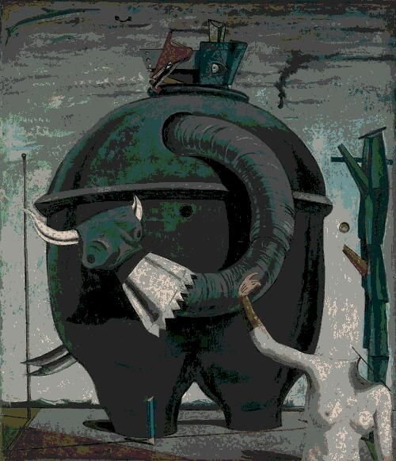
Based on a photo of a Sudanese corn bin. It became a boiler-elephant: riveted belly, hose for a trunk, a bull's head. A headless woman beckons. A machine from a dream.
image via en.wikipedia (PD-US)
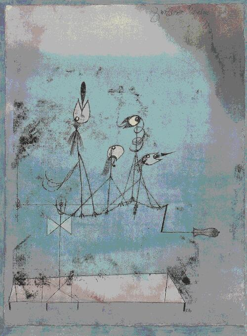
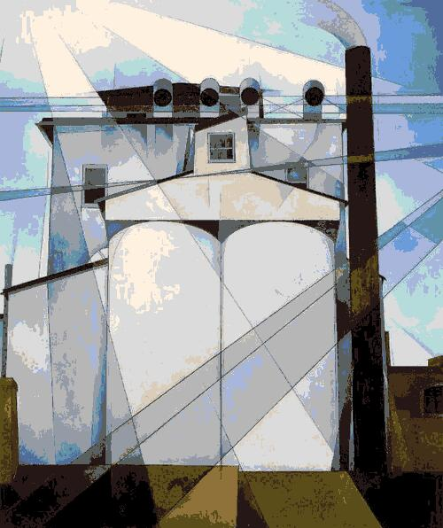
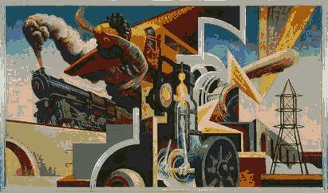
Painted for the New School boardroom. Train, plane, dynamo, oil derrick, all packed into one panel. The rest of the cycle covers steel, coal, cities, the Midwest.
low-res image, fair use via en.wikipedia
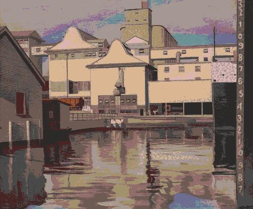
Ford's plant at Dearborn, painted from Sheeler's own 1927 photos (see below). Still water, clean volumes, nobody around. Precisionism: the factory as a Shaker barn.
photo taken in the museum, cropped by the frame
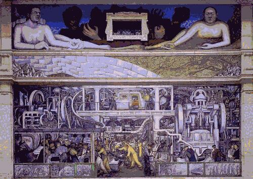
The same River Rouge plant, the opposite of Sheeler: crowded, sweaty, packed with bodies. Commissioned by Edsel Ford. South wall: stamping presses, the Ford V8 assembly line. Rivera called it his best work.
image via en.wikipedia
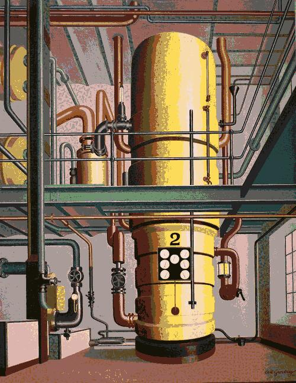
Neue Sachlichkeit. A yellow boiler in an empty plant room, every pipe and valve sharp. No worker, no smoke, no drama. Machines painted as still lifes.
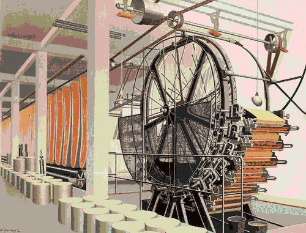
Same treatment: rollers in perspective, a hall lit from the side. Grossberg died in 1940, in the first year of the war.
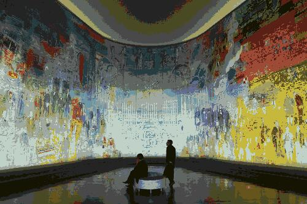
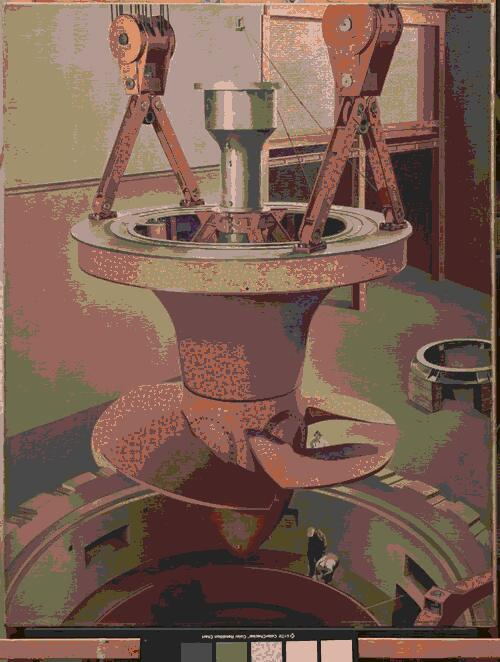
A hydraulic turbine being lowered into place at the new Guntersville dam, Alabama (TVA). From the "Power" series commissioned by Fortune in 1938, published as a portfolio in 1940. The machine hangs there like a relic.
dma · Valance, Transatlantica 2017
image courtesy Dallas Museum of Art (open access)
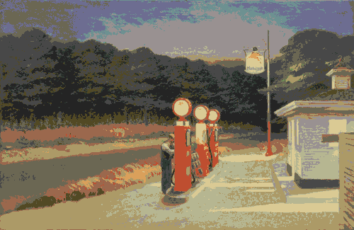
Three red pumps, an attendant, dusk, the road running into the woods. No factory here: the machine is part of the American landscape now, and lonely.
image via Wikimedia Commons
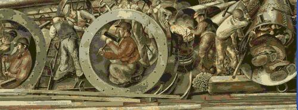
Commissioned by the War Artists' Advisory Committee: Lithgows yard, Port Glasgow. Bodies squeezed into a long strip, like a church predella. Industry as a collective act of devotion.
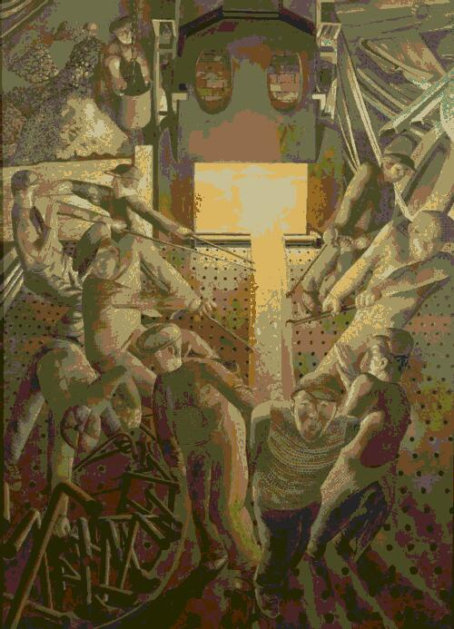
Same series. A red-hot steel section dragged out of the furnace mouth. A late echo of Wright's forge, 175 years on.
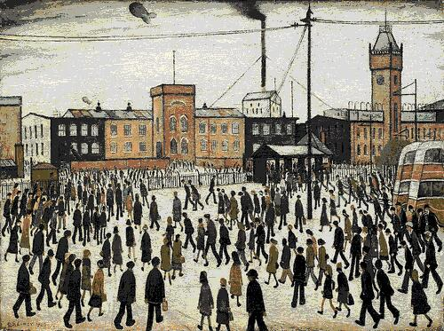
Snow, the Mather & Platt works in Manchester, the crowd of "matchstick men" streaming through the gate. Lowry was a rent collector all his life and painted on the side.
image via Wikimedia Commons
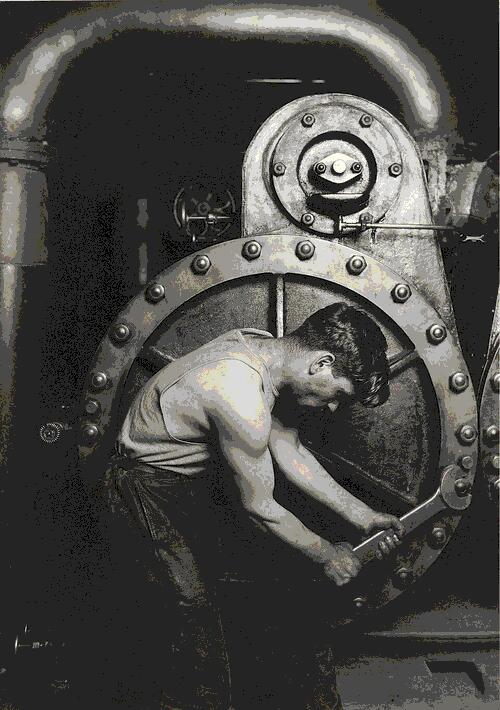
Hine started out photographing child labour to expose it. Here he turns to the "work portrait": a man bent into the curve of the machine. Man and machine as partners. Probably staged.
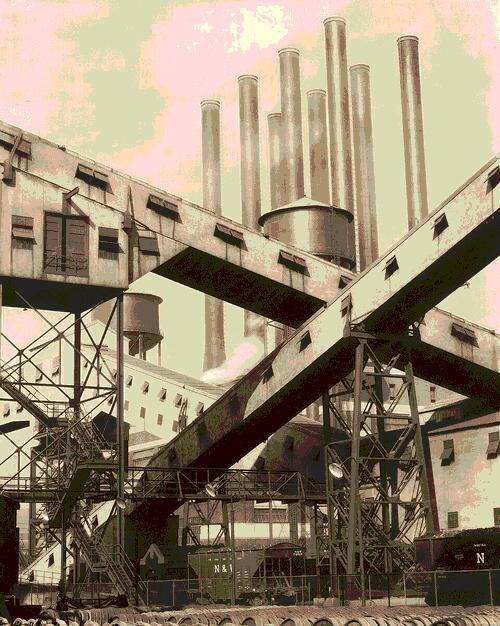
Ford hired Sheeler for six weeks to photograph the Rouge. The conveyors cross the sky like a cathedral's flying buttresses. He went on to paint from these photos for years.
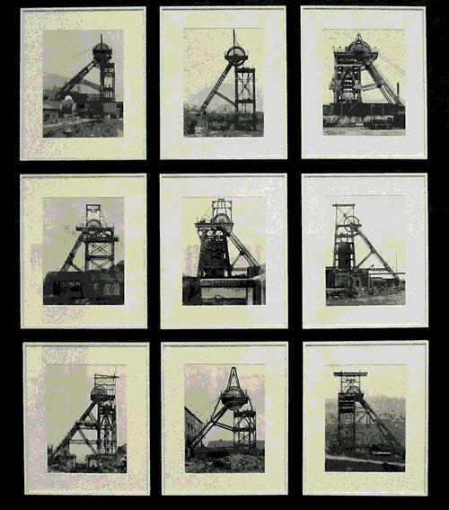
Winding towers, blast furnaces, water towers, gas tanks. Shot front-on under a grey sky, then hung in grids. "Anonymous sculptures": they shot industry just as it was disappearing. Their students became the Düsseldorf school: Gursky, Struth, Ruff.
exhibition view, photo CC BY-SA 4.0, see commons page
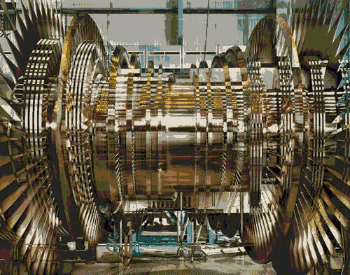
A turbine rotor in the Alstom hall at Belfort. Melting Point: two shots of the same place merged into one, so the blades and girders overlap. Too much detail, no clear plane, the eye gets lost. Couturier also did Renault Billancourt, Toyota at Valenciennes, building sites. Prix Niépce 2003.
stephanecouturier.fr · wikipédia
© Stéphane Couturier, low-res excerpt
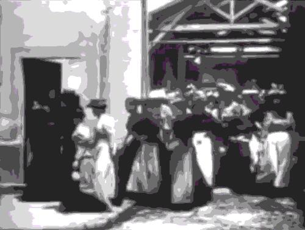
The first film ever shown publicly is a factory gate at closing time. Cinema starts with workers leaving work. Three versions exist.
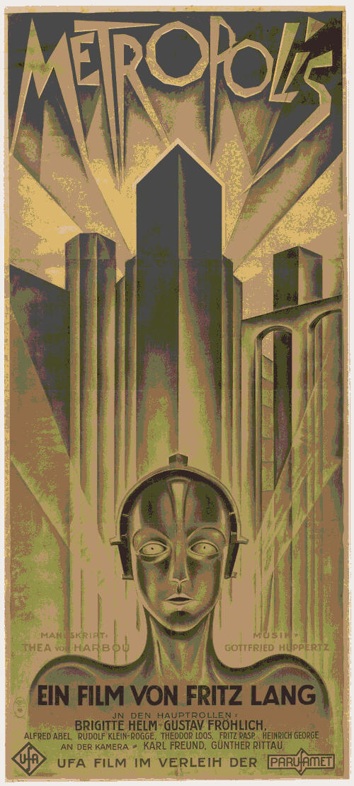
Workers in shifts underground, feeding the machine. The machine turns into Moloch and swallows them. Plus the robot Maria. The reference for everything that follows.
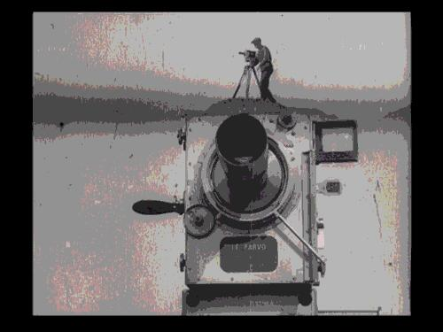
No story, no actors, no intertitles. A day in a city, cut to the rhythm of looms, trams and machines. The camera itself is a machine, the "kino-eye". The optimistic side.
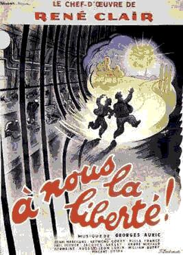
Prison and the gramophone factory: the same assembly line. The producers sued Chaplin over Modern Times; Clair refused to take part, saying he was flattered.
poster, fair use via en.wikipedia
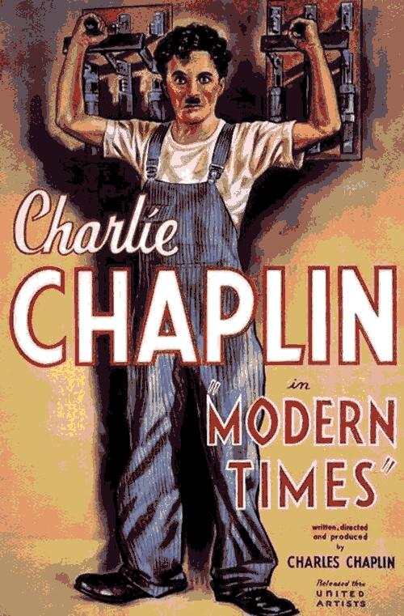
The tic from tightening bolts, the feeding machine, Charlot swallowed by the gears. The last silent film, nearly: you only hear machines, loudspeakers and a song in nonsense words.
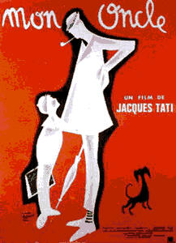
The Villa Arpel with its fish fountain, and the plastic hose factory where Hulot breaks the extruder and the tubes come out like sausages. Old Saint-Maur against modern gadgets.
poster, fair use via en.wikipedia
Antonioni's first colour film. Ravenna's petrochemical plants, yellow smoke, painted fruit stalls. Monica Vitti falls apart. Antonioni said he found the factories beautiful.
poster, fair use via en.wikipedia
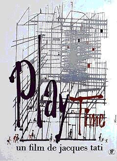
Tativille: a whole glass-and-steel Paris built in Saint-Maurice. The machine here is the city itself. It ruined Tati.
poster, fair use via en.wikipedia
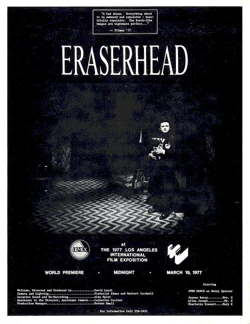
An industrial wasteland with a constant hiss and hum of machines. Lynch drew on Philadelphia. The factory as a nightmare you can hear.
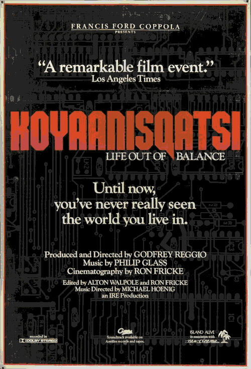
Hopi for "life out of balance". No words. Time-lapse of highways, assembly lines, hot dogs and crowds, all moving at the same speed.
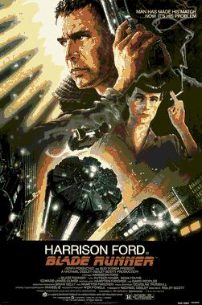
The opening shot: Los Angeles 2019 as a refinery with flares, based on the Teesside petrochemical works that Scott grew up near. The replicants are the machines that want to be people.
poster, fair use via en.wikipedia
A salaryman turns into scrap metal from the inside. Stop-motion, noise, rust. Body horror meets machines.
poster, fair use via en.wikipedia
Metropolis turned around: the machines have won and run the factory. Humans are grown in fields of pods as batteries. The office is the dream, the power plant is the reality.
poster, fair use via en.wikipedia
Industrial food production: abattoirs, greenhouses, chick sorting. No commentary, no music, symmetrical wide shots. The Becher grid, in motion.
poster, fair use via en.wikipedia
Follows Burtynsky in China. Opens with an eight-minute tracking shot along a factory floor, workers in yellow, endlessly. The sublime again, as in Loutherbourg.
poster, fair use via en.wikipedia
Earth is one big landfill. The last working machine compacts trash cubes, piles them into towers and watches Hello, Dolly! Nearly silent for the first 40 minutes, like Chaplin.
poster, fair use via en.wikipedia
.jpg){kind=link}
_-_An_Iron_Forge_-_T06670_-_Tate.jpg){kind=link}
_-_Arkwright%27s_Mills_-_2016-56-2_-_Derby_Museum_and_Art_Gallery.jpg){kind=link}


_-_In_the_Nineteenth_Century_the_Northumbrians_Show_the_World_what_Can_Be_Done_with_Iron_and_Coal_-_584372_-_National_Trust.jpg){kind=link}


_Fabrieken_bij_Charleroi_-_Mus%C3%A9e_d%27Orsay_Parijs_22-8-2017_16-28-31.JPG){kind=link}


,_1922_-_Paul_Klee.jpg){kind=link}

.jpg){kind=link}


.jpg){kind=link}
.jpg){kind=link}